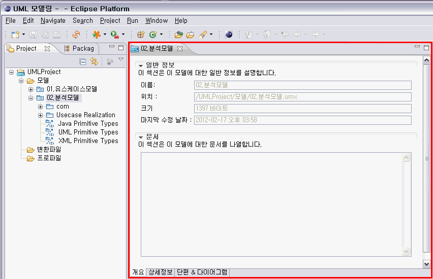
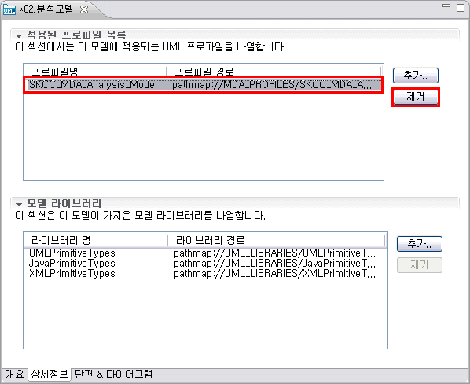

1. 프로파일 적용
프로파일 적용은 모델 편집기에서 할 수 있습니다. 모델 편집기에서 적용한 프로파일은, 모델의 개별 요소를 선택한 후, 특성 창의 [스테레오 타입] 탭에서 스테레오 타입으로 사용할 수 있습니다.
1.1 모델 편집기 열기
프로젝트 탐색기 창에서 해당 모델을 더블 클릭하거나, 해당 모델을 선택한 후 [엔터] 키를 입력하거나, 해당 모델을 선택한 상태에서 마우스 오른쪽 클릭 > [열기]를 클릭하면 모델 편집기가 열립니다.

<그림 1. 모델 편집기 열기>

<그림 2. 모델 편집기>
1.2 상세정보 탭 열기
모델 편집기 하단에 있는 탭 중, [상세정보] 탭을 클릭합니다.

<그림 3. 상세 탭 열기>
1.3 프로파일 추가
모델 편집기의 [상세정보] 탭 화면의 상단에 있는 [적용된 프로파일 목록] 섹션에는 현재 모델에 적용되어 있는 프로파일이 모두 나타납니다. 프로파일을 추가하기 위해서는 이 섹션에 있는 [추가] 버튼을 클릭합니다.

<그림 4. 프로파일 추가>
[UML 프로파일 적용] 팝업창에 프로파일 리스트가 나타납니다. 이 리스트에는 기본적으로 NEXCORE UML Modeler에 내장된 프로파일이 나타납니다. 현재 프로젝트에, 프로젝트 탐색기에서 해당 프로젝트 하위의 폴더에 [Import]한 프로파일이 존재한다면 이 프로파일들도 나타납니다. 여기서 추가하고자 하는 프로파일을 선택하고 [OK] 버튼을 클릭합니다.

<그림 5. 프로파일 선택 다이얼로그>
[적용된 프로파일 목록]에, 선택한 프로파일이 추가된 것을 확인할 수 있습니다.

<그림 6. 적용된 프로파일>
1.4 프로파일 제거
모델 편집기의 [상세정보] 탭 화면의 상단에 있는 [적용된 프로파일 목록]에서, 삭제하고자 하는 프로파일을 선택한 후 [제거] 버튼을 클릭합니다.

<그림 7. 적용된 프로파일 제거>
[적용된 프로파일 목록]에서, 제거하고자 하는 프로파일이 없어진 것을 확인할 수 있습니다.

<그림 8. 프로파일 제거 확인>
2. 라이브러리 적용
라이브러리 적용은 모델 편집기에서 할 수 있습니다.
2.1 모델 편집기 열기
프로젝트 탐색기 창에서 해당 모델을 더블 클릭하거나, 해당 모델을 선택한 후 [엔터] 키를 입력하거나, 해당 모델을 선택한 상태에서 마우스 오른쪽 클릭 > [열기]를 클릭하면 모델 편집기가 열립니다.
<그림 9. 모델 편집기>
2.2 상세정보 탭 열기
모델 편집기 하단에 있는 탭 중, [상세정보] 탭을 클릭합니다.
<그림 10. 상세 탭 열기>
2.3 라이브러리 추가
모델 편집기의 [상세정보] 탭 화면의 하단에 있는 [모델 라이브러리] 섹션에는 현재 모델에 적용되어 있는 라이브러리들이 모두 나타납니다. 기본적으로 모델을 생성하면, 3가지 라이브러리가 포함되어 있습니다. 여기서는, 라이브러리가 1가지만 포함되어 있다고 가정하고 진행하겠습니다. 라이브러리를 추가하기 위해서는 이 섹션에 있는 [추가] 버튼을 클릭합니다.

<그림 11. 라이브러리 추가>
[라이브러리 적용] 팝업창에서 추가할 라이브러리를 선택하고 [OK] 버튼을 클릭합니다.

<그림 12. 라이브러리 선택 다이얼로그>
[모델 라이브러리]에, 선택한 라이브러리가 추가된 것을 확인할 수 있습니다.

<그림 13. 추가된 라이브러리>
2.4 라이브러리 제거
모델 편집기의 [상세정보] 탭 화면의 하단에 있는 [모델 라이브러리]에서, 삭제하고자 하는 라이브러리를 선택한 후 [제거] 버튼을 클릭합니다.

<그림 14. 라이브러리 제거>
[모델 라이브러리]에서, 제거하고자 하는 라이브러리가 없어진 것을 확인할 수 있습니다.

<그림 15. 라이브러리 제거 확인>
3. 모델 정보
3.1 일반 정보
프로젝트 탐색기 창에서 해당 모델을 더블 클릭하거나, 해당 모델을 선택한 후 [엔터] 키를 입력하거나, 해당 모델을 선택한 상태에서 마우스 오른쪽 클릭 > [열기]를 클릭하면 모델 편집기가 열립니다. 모델 편집기의 [개요] 탭, [일반 정보] 섹션에서 해당 UML 모델에 대한 일반 정보를 확인할 수 있습니다. 모델의 이름, 모델 파일이 위치한 작업 공간 내의 위치, 모델 파일의 크기, 모델 파일의 마지막 수정 날짜를 확인할 수 있습니다.

<그림 16. 모델 편집기의 일반 정보>
3.2 문서
모델 편집기의 [개요] 탭의 하단에 [문서] 섹션이 있습니다. 이 부분에, 해당 모델과 관련한 정보들을 입력하여 저장할 수 있습니다. 입력된 문서 정보들은 모델 파일에 저장됩니다.

<그림 17. 모델 편집기의 문서 정보>